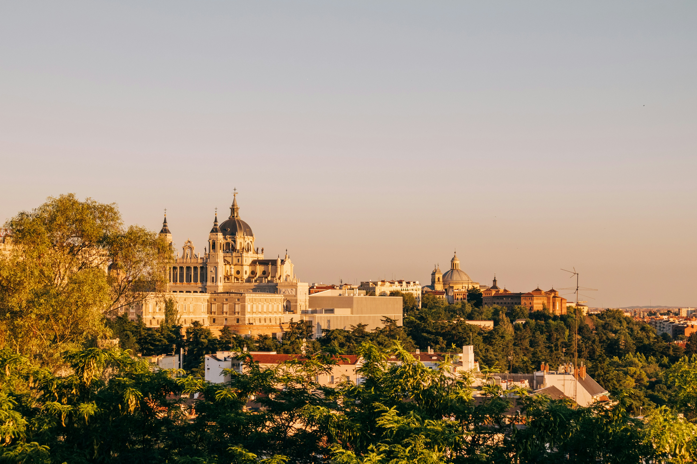

Madrid is a city defined by energy, culture, and a strong sense of identity. As the capital of Spain, it blends historic elegance with a modern lifestyle. It is known for its grand boulevards, open plazas, and a rhythm of life that extends well into the night.
Madrid offers a balance between tradition and modernity. It is a city where you can explore world-class art, enjoy vibrant nightlife, and experience authentic Spanish culture in everyday life.
The city is filled with impressive landmarks that reflect both royal history and urban development. Many of these locations are central gathering points for locals and visitors.
Madrid is composed of districts that each offer a different experience. Exploring these areas reveals the diversity of the city.
Madrid is home to some of the most important art collections in the world. The city’s museums showcase works from major European artists and attract visitors interested in cultural heritage. Beyond museums, Madrid also offers theaters, music venues, and frequent public events.
Food plays a central role in Madrid. The culture of tapas allows people to share small dishes in a social setting. Meals often take place later in the day compared to other countries, and the city remains active well into the night. Markets and traditional restaurants offer a wide variety of local specialties.
Madrid has a warm and social atmosphere. Public spaces are often full, and daily life happens outdoors in plazas and streets. The city feels open and welcoming, with a strong emphasis on community and interaction.
Madrid is a city that combines history, culture, and a vibrant social life. It is ideal for visitors who want to experience authentic Spanish traditions alongside a modern urban environment.